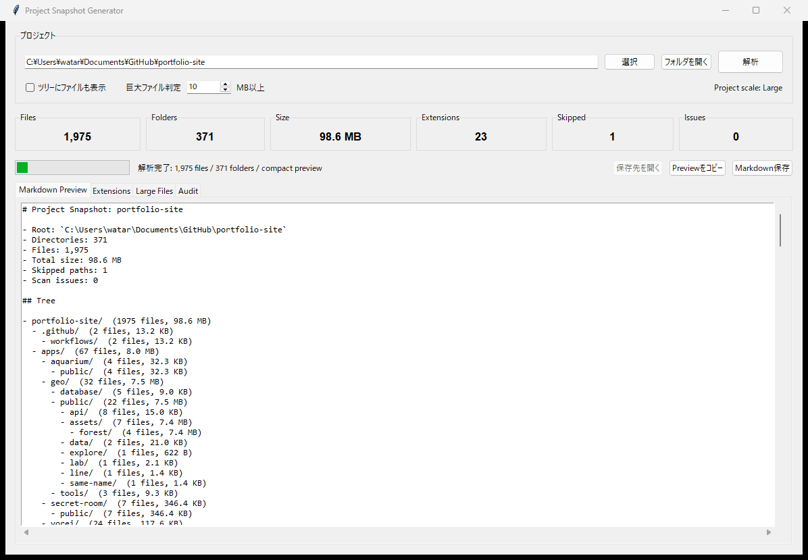

Project snapshot
フォルダツリー、ファイル数、ディレクトリ数、総容量を1回の走査からまとめて取得します。
Project Snapshot Generator · Python / Desktop / Project Analysis
v0.4.0 RC

以前使っていたDirTreeMakerを作り直し、プロジェクトの構成・規模・ファイル傾向を1枚のMarkdownへまとめるWindowsデスクトップツールにしました。レビュー、引継ぎ、整理前の現状確認に使えます。
フォルダツリー、ファイル数、ディレクトリ数、総容量を1回の走査からまとめて取得します。
小規模案件では全ファイルを表示し、大規模案件では個別ファイルを省いたCompact表示へ自動で切り替えます。
拡張子別の構成比、巨大ファイル、Git除外候補、スキップしたパス、走査エラーを確認できます。
GUIで確認した同じ解析結果からMarkdownを保存・コピーできるため、レビューや引継ぎへそのまま持ち出せます。
Windows向けソースリリースです。Python 3.10以上とTkinterを使用し、追加パッケージは不要です。